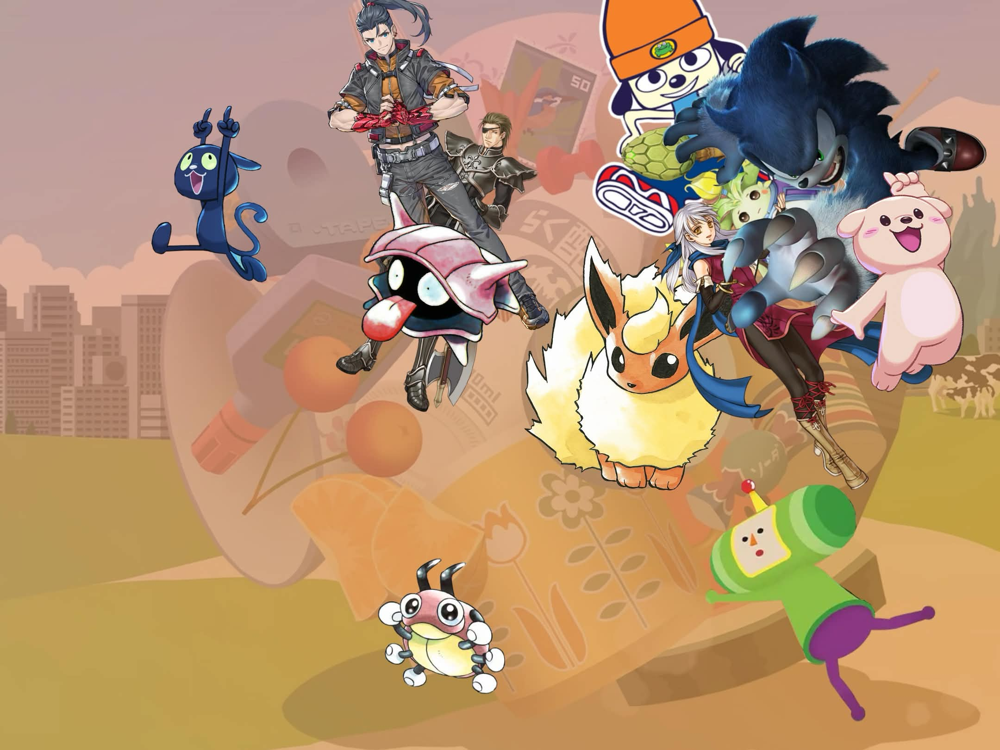
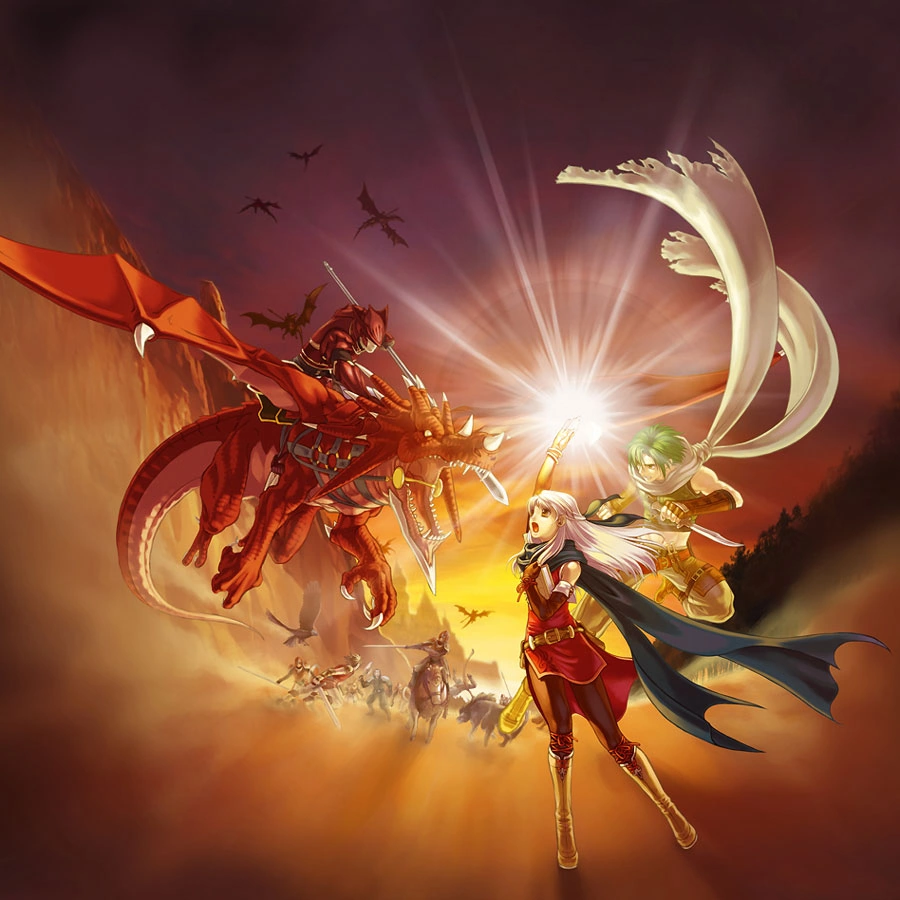
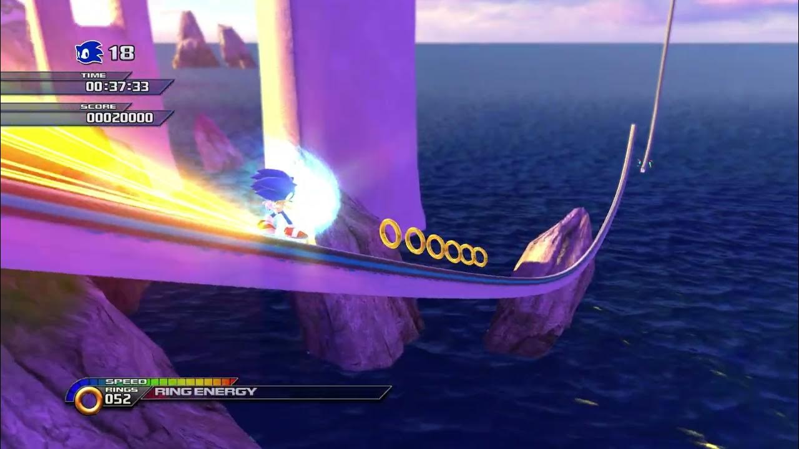
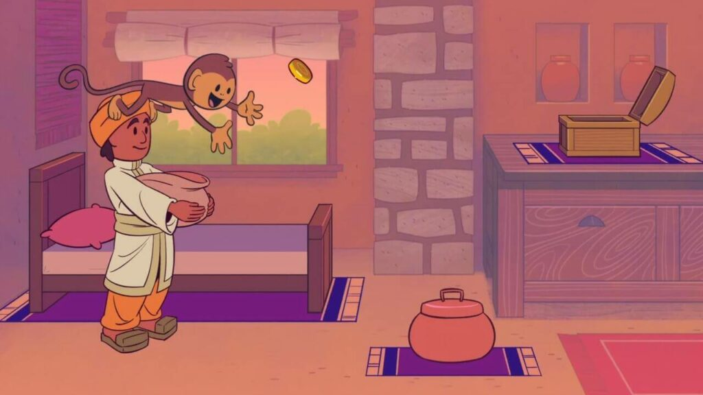
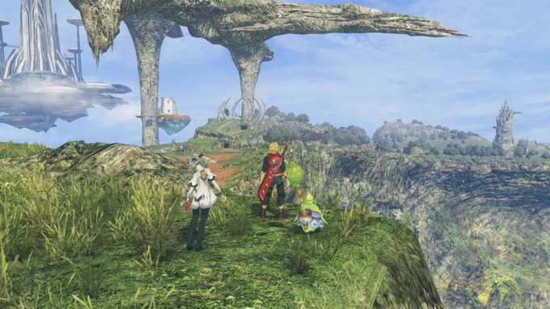
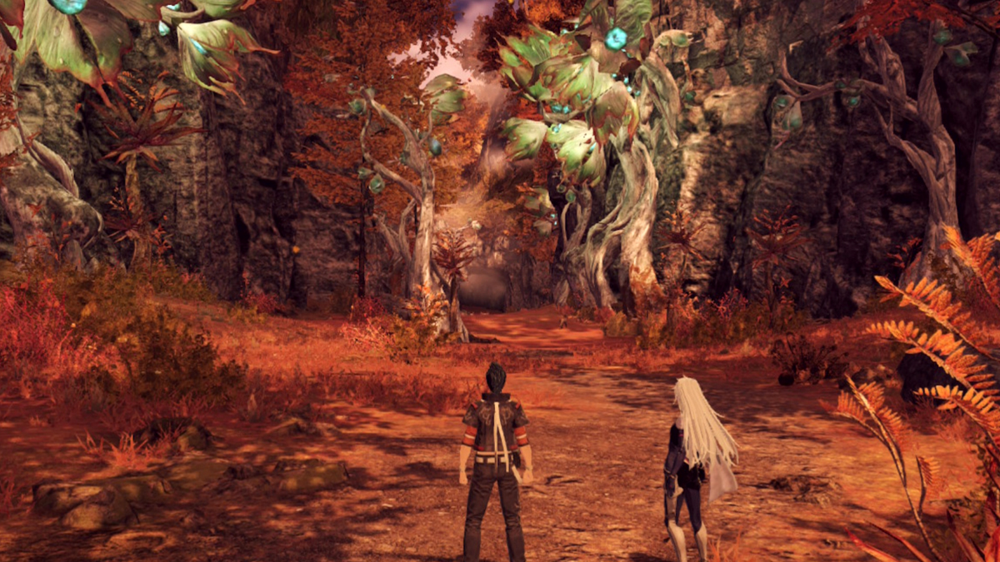
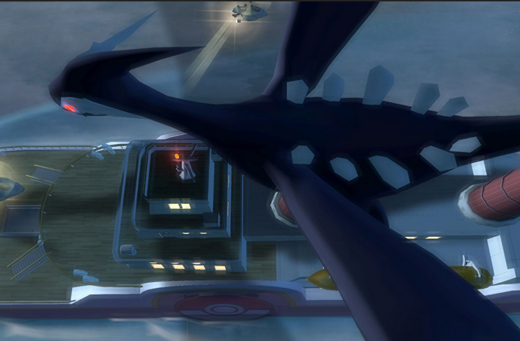

Every Game I Played In 2026
Witty tagline here, amirite?
UNDER CONSTRUCTION, READ IF YOU DARE
Writing that list of every game I played in 2025 scratched a super specific itch so I’m back on it with my 2026 games. In fact - I’m so on it that the year isn’t done and I’m already desperate to write about some of these games, and as such; this is a little ongoing preview of my thoughts as I finish each game. This list obviously won’t be fully finished until the end of the year - but if that day never comes (which it very well might!), I’ll rest easy knowing that I put my thoughts down on Fire Emblem: Radiant Dawn. It’s also good for me to write this stuff down in case any of it ends up being way too long and spinning off into its own article - like my thoughts on DK last year. And just like with...
Fire Emblem: Radiant Dawn

The Game That Saved The Fixaton I Had On The Franchise
So, Radiant Dawn... I have a bit to say about it! A bit too much, so here's a much larger article about it.
I love this game so much - but I can't just openly recommend it without playing Path of Radiance first... oh what's that? They put Path of Radiance on Switch 2? What a perfect coincidence!
Sonic Unleashed

New Year, New Sonic, I guess
It seems typical that I would start every year with a Sonic game. Sure, I did technically finish Radiant Dawn first - but I started it last year, it just barely didn't make my list for last year. This was the real first game I finished this year, and a real doozy to finally check off the backlog after... 18 years? I feel like I'm withering away...
Unleashed has had a bit of a resurgence in recent years due to... nostalgia? I guess? Sonic is so weird. I love this series to death but people weigh positive qualities of games in fascinatingly different lengths. This game has become hugely beloved for it's mach speed Sonic levels which are, in all fairness: incredibly fun, aesthetically gorgeous, and mind-blowing musically. With how people talk about this game, you'd think that was the whole thing, but that's like... 20%? The other 80% are horrific boss fights, egregiously slow God of War-esque beat-em-up segments, and pace-breaking medal-grinding nonsense. Said 80% was what held me back from finishing it all these years. So now that I have... was it worth it?
Shockingly, yes? I think so? Sonic is so weird! It messes with your brain, causes you to look at hugely flawed experiences with a shimmer of fascination, and to weirdly look over holistically unflawed experiences.
Sonic Adventure 2 is another good example. 70% of that game makes me want to rip my eyes out, anything where you play as Tails or Knuckles is horrendously unenjoyable. But that other 30%? The Sonic levels? The Chao Garden? The music? THE CUTSCENES? Makes me want to put it as one of my all-time favourite games. Please never ask me to play it.
Same with this, although to a much lesser extent - because I definitely prefer the Adventure style of Sonic gameplay, but still... Do I think fondly of Unleashed? Yes? Would I ever play it again? Please no.
Bits and Bops

Rhythm Everyday
An indie rhythm game of late last year, Bits and Bops wears its Rhythm Heaven inspiration on its shoulder - that’s why I was initially interested! It’s awesome to see one of my favourite Nintendo games get so much love in the indie space, but unfortunately it felt very confined by the loving homage box it has planted itself in. I’ve played a few other Rhythm Heaven inspired indie games, namely Melatonin and Rhythm Doctor - and both firmly step beyond the limitations of said box. The former is a thematic spectacle that leans much more lo-fi (and I actually wrote an article about it not long after starting this blog!), whilst the latter takes a single gameplay idea and pushes it so far to create a much more distinct identity - to the point where the Rhythm Heaven DNA is only suggestive.
Ultimately, I left Bits and Bops feeling happy but wishing it pushed more into it’s own area: The rhythm games don’t do anything bold theory-wise, and it doesn’t have much of it’s own identity visually or thematically. It’s also much easier than Rhythm Heaven: I was able to perfect quite a few games on my first try, which left little ambition for me to improve. I will say that the back half of the game is much better than the front - both in terms of memorability and difficulty - so at least it ends on a high note.
It should go without saying, but the music is very good! I didn't find the songs getting stuck in my head too much, but I'm listening back now and really liking these. I'll add some of these to a playlist, and maybe it will draw me back to the game by the year's end, and you'll see it climb up this list.
Even though they only composed a tiny portion of the meal; my favourite part were the co-op rhythm games, specifically the blacksmith one! I’d never really seen that kind of cooperative rhythm experience, and it was something that, whilst small, stuck with me and I’d like to see more of in a larger context. Rhythm games and party games don’t have too much overlap; sure, there’s Guitar Hero and its ilk, but this felt like an interesting little experience worth fleshing out more.
Xenoblade Chronicles: Future Connected

The Worst Thing Xenoblade Has Ever Done*
*Although that mainly just means it's a 5/10 in a 10/10 franchise.
Future Connected is... comfy. Although really, the comfy part is playing Xenoblade 1 again, which is like a second skin to me. The combat system, the way the world feels, an easy top 5 game of all time for me. So adding a little extra... bit to it is inoffensive. It's like the video game equivalent of when sitcoms would do a little reunion episode 10 years after it finished airing, for charity or something. Especially fitting since it came out in 2020 - prime time for such a reunion.
Remember Melia? She's back, in Pog Form! Turns out she made up with her sister and her people and everything was happy for her in the end, yippee! It's so nice seeing her be happy and seeing Shulk mellow out, and hearing about Riki's kids... and... yeah, there's nothing really to say here. I'm very glad it exists, but it does not hold a candle to either of the bonus stories of 2 and 3. Speaking of...
Xenoblade Chronicles 3: Future Redeemed

The Best Thing Xenoblade Has Ever Done*
*Since the first game. I mean, are you kidding me? That game is a masterpiece! This game, well...
It's kind of also a masterpiece! Just a little one. Future Redeemed is insane, and mostly because of the sheer difference between it and the game it’s based on. It’s literally night and day: what a huge step this is in tight pacing, having likeable characters with unique perspectives, and just generally how much fun I was having. This game rocks.
Because it’s a much shorter story, it has to work so much harder to endear you and it succeeds with flying colours - the vibes of this game are just so good. No more clunky class system, the battles feel much better because planning out builds doesn’t feel like a stab in the dark, and character build progression being tied to area exploration feels so natural! One of the only issues I had with Torna: The Golden Country, was how it forced all of the extra content onto you to pad the game. I liked said extra content, but XC3’s DLC setup feels so much more natural, and I did all of said extra content just because it felt good.
It's feel good in a very different way from Future Connected; which feels good because it leeches off a game I love. Future Redeemed feels good because it takes a game I'm mixed on and elegantly connects loose threads and dots to become such a satisfying culmination of everything Xenoblade.
The music is so good, I've been listening to the battle theme nonstop since I started writing this; and the characters? They are so loveable instantly, and provide a much more interesting perspective on the world than the cast of base game Xenoblade 3.
Ironically, a lot of what I love is why I love Radiant Dawn - it skips the faff and goes straight into the best bits of this world. The title is perfect, because it genuinely does Redeem the world and mechanics of Xenoblade 3 for me.
Following on from said Radiant Dawn article, maybe that's just it? The kind of sequel I'm looking for that purely expands on the existing game has been moved to the space of DLC? I'm not a huge fan of that (and I don't really agree, the Xenoblade series is the exception that proveds the rule here).
Pokemon XD: Gale of Darkness

Shadow of its Former Self
Next to the aforementioned Sonic, Pokémon has to be my most replayed series for an immediate wave of comfort - so I figured I should fill one of the main gaps in my catalogue and play the sequel to Pokémon Colosseum.
Pokémon, especially in the Gen 2-4 era, always married the JRPG genre with life sim; the day night cycle, decorating your base, the heap of side content - the main appeal was to get players immersed in the world. I always thought Colosseum was so neat for leaning much more heavily into the JRPG side of things - the more intricate battle system of double battles being prioritised, the lack of random party members, the stripping of the sim elements. Orre felt much less like a real place and much more like a fantasy world, especially with the high camp, Fifth Element style character designs; and that was interesting!
And XD is more of that but also less of that? It takes deliberate steps to re-incorporate life sim style elements, such as the Wild Pokémon! …That notify you in the middle of your dungeon exploring to break the pace and tell you to leave and run straight there. Same with the Shadow Pokémon purification notifications, which are theoretically more streamlined but in practice far clunkier because they really take you out of the experience. In an attempt to immerse - they distanced themselves from the reality that makes Pokémon so compelling, and lost a bit of what makes Colosseum compelling on a separate basis.
The pacing and endgame is a total mess too. It feels like half of the game is taken up by the final dungeon, and a huge amount of your possible party members are there. In fact, the game stretches the Shadow Pokémon mechanic way too thin with how it asks you to catch multiple Shadow Pokémon per fight, it takes way too much agency out of the players hands and de-emphasises the strategy of the double battles by making it rely so much more on the luck of catching Pokémon.
Ultimately, I feel like XD pushed itself too far and inadvertently became something else that feels way more… lacklustre than it’s predecessor? A bit of a contradiction; but hey ho.
Since you are so patient and read this non-finished article, here is an in-porgress ranking of each game. Just so I can keep the formatting whilst I'm working on it.
- Fire Emblem: Radiant Dawn
- Xenoblade Chronicles 3: Future Redeemed
- Xenoblade Chronicles: Future Connected
- Bits and Bops
- Pokemon XD: Gale of Darkness
- Sonic Unleashed
I'll see you when the article is done! Hopefully, I mean. Unless you plan to just leave me here, in this ephemeral, existential unfinished article prison. You wouldn't do that, right? You... one single individual person that will read this?